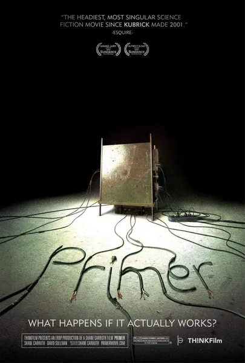

Фильм · 2004 · Драма, Триллер
Четверо инженеров-самоучек создают устройства для подавления гравитации и случайно собирают машину времени — правда, позволяющую переместиться лишь на шесть часов назад. Аарон и Эйб начинают использовать её ради выгоды: играют на бирже, заранее узнают ход разговоров и моделируют «идеальные дни». Однако каждое перемещение создает дубликат человека, и чем больше временных петель они запускают, тем сложнее понять, кто из вас — настоящий, а кто — лишь копия. Это самый честный фильм о путешествиях во времени, снятый инженерами: здесь нет спецэффектов, зато безупречно работает логика парадоксов.
Four garage engineers build gravity-dampening devices and accidentally assemble a time machine — six hours back, no more. Aaron and Abe start using it for profit: playing the market, pre-empting conversations, engineering 'perfect days'. But every run duplicates a person, and the more loops they open, the harder it is to tell which of you is the live one and which is the recording. The most honest film about time ever made by engineers: no special effects, but a genuinely working logic of paradoxes.
← Вернуться в каталог IT Movies